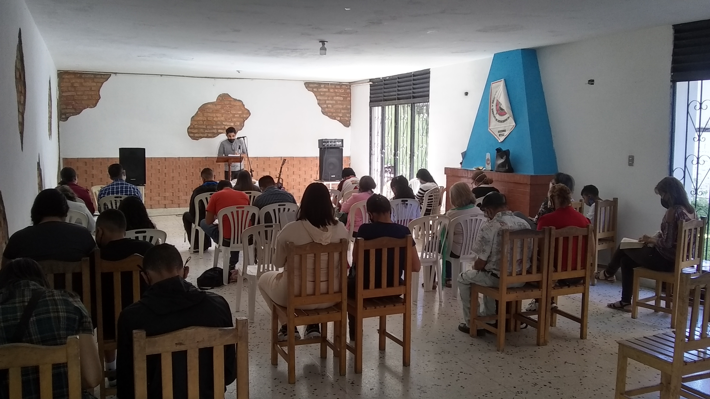
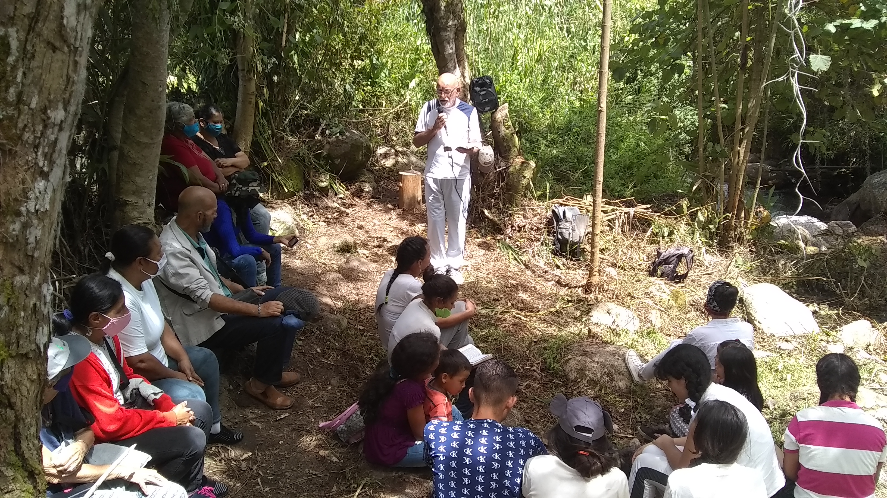

Mérida, El Campito
Esta fue la primera iglesia fundada por la comunidad
de Palabra viva.

Dirección
Avenida las Américas, sector El Campito, Colegio de
Licenciados en Educación.
Horarios de culto
Domingos, 10 am.
Oficiales
Pst. Eduardo Osteicoechea.

Mérida, Mucunután
Esta fue la tercera iglesia fundada por la comunidad
de Palabra viva.

Dirección
Sector Mucunután, cruce "Dos caminos", casa
de oración.
Horarios de culto
Domingos, 9-12 am.
Oficiales
Pst. Eguis Rodríguez.
Anzoategui, Barcelona
Esta fue la segunda iglesia fundada por la comunidad
de Palabra viva.
Dirección
Por venir.
Horarios de culto
Domingos, 9 am.
Oficiales
Pst. Yonder Oviedo.
Historia
La iglesia Palabra viva se fundó en el año 2008, luego de que
cinco familias merideñas se reunieran semanalmente durante dos
años para estudiar temas clave de las Escrituras.
Éstos hermanos procedían de diferentes denominaciones,
y decidieron reunirse a causa de su descontento
con numerosas tradiciones denominacionales
y filosofías ministeriales que afectaban el sano crecimiento
de los creyentes.
Luego de comprender que Dios les llamaba a fundar
una congregación,
la comunidad reconoció a
tres ancianos que lideraron inicialmente la iglesia, emprendiendo
su visión inicial de convertirse en un centro de capacitación bíblica
para creyentes merideños.
Actualmente, el título "Iglesia Palabra Viva" representa a
varias congregaciones de pensamiento afín, que perseveran
en las Escrituras dependiendo de la gracia de Dios para
conocer al Salvador y conformarse a Su voluntad por medio
de Su palabra.
A continuación encontrarás información sobre
cada una de nuestras congregaciones, junto a sus
respectivas direcciones y horarios de culto.
Puedes conocer nuestras creencias esenciales en
la sección de creencias de ésta web.
Puedes contactarnos a través de los datos que encontrarás
al pie de esta página. Estaremos dispuestos para
responder cualquiera de tus preguntas y servirte
en la medida de nuestras posibilidades.